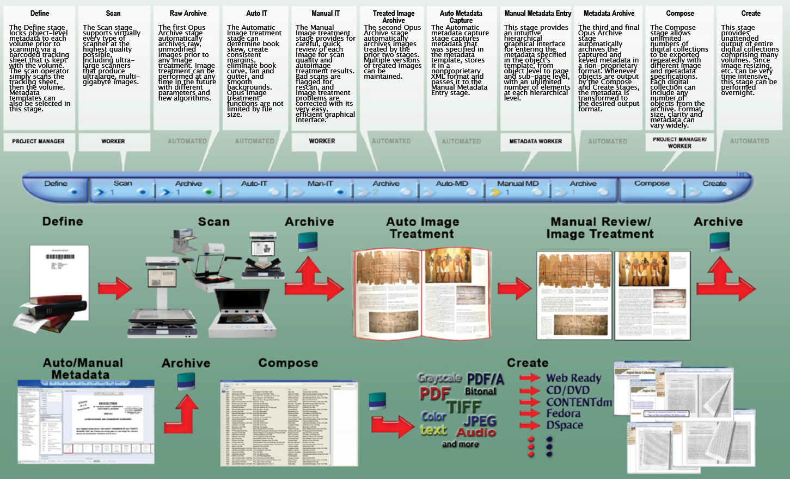

OPUS WorkFlow Systems
- Superior Image Treatment ... Designed for Projects and Archival
- Fully Integrated Hierarchical Metadata Capture
- Next Generation Workflow with Automatic Archive
- Open RAID Digital Archiving & Migration Management Software using Automated Data Migration Facility
- Customizable output formats including Web with virtual 3D page turning
- Enlightened Architecture
- Supported by experienced digital experts
- Creation of large amounts of derivatives unattended (e.g. overnight)
A New Era in Digitization
Get into the game with Opus! Long have the complexity and high startup and operating costs of digitization projects kept most libraries, museums and archives on the sidelines. Opus leverages today’s highperformance, low-cost computers to obliterate those barriers with its paint-by-numbers digitization system that produces the highest quality digital collections possible at less than 1/3 historic startup and operating costs. In as little as one day, Digital Library Systems Group (DLSG) installation and training staff will leave you with a fully operational digitization system. Followon training sessions via the Web ensure that your staff is producing multiple beautiful digital books per day in no time, complete with hierarchical metadata.
With the new low prices and high-performance of the latest book scanning hardware, complete digitization labs are surprisingly affordable.
The digital archives that Opus creates can be accessed without proprietary software. Using its Compose Collection and Create Collection capabilities, Opus can create an unlimited number of digital collections in nearly unlimited formats (derivatives) any time in the future. Simply select the desired volumes and data formats and let Opus create your collection(s) unattended overnight.
Opus’ automated data migration facility makes it easy to transfer multiple copies of your digital archive to new media every three to five years, ensuring that no data is ever lost. In addition, during data migration, Opus will automatically convert from outdated data formats to any new standards that might emerge in the future.
Opus Digitalization Workflow System
A Complete Turnkey System that's Built for Non-technologists
Elements of Opus
Workflow Manager
Opus Workflow Manager completely manages all objects throughout the entire digitization process while allowing third party software to be used where desired; provides tools for monitoring all objects as they move through the digitization workflow system to make managing projects and scheduling workers a breeze; and minimizes the cost of rework, whether it be skipped or improperly performed work, or even a change in the fundamental rules governing a digitization project.
Automatic and Manual Image Treatment
Opus completely automates the Image Treatment processes by separating two-up images, removing bookfold distortion, fan, gutter, and skew; all in a single operation. Opus also provides a streamlined graphical interface to manually perform the specialized image treatment functions required for both digital preservation and the various types of access.
Integrated Hierarchical Metadata Capture
Opus' Metadata Capture stages are not part of any digital collection viewing software, but instead are built seamlessly into the Opus digitization workflow system. The Opus Metadata Capture stages allow users to select from a list of standard hierarchical metadata templates, create new ones and restrict users to a subset of templates for a given project. The templates include metadata characteristics like requiring certain metadata to be captured, allowing some types of metadata to be repeated and requiring a single value for other types.
State-of-the-Art Customizable Output Derivatives and Formats
Opus' Create Collection stage provides output thatcan be imported into open source and proprietary content management and digital library systems. Storage and internet bandwidth requirements rise as image quality rises. Opus lets the user select the ideal compromise for each access system that collections are deployed to. If requirements change, simply output the collection again with different clarity parameters.
Automated Archival
Opus adheres to the Open RAID standard. During the digitization process, there are three points at which archival is necessary: 1) archival of images immediately after scanning and before image treatment is performed; 2) archival of images after image
treatment has been performed; and 3) archival of metadata after metadata has been captured. Opus creates archives that are open architecture in formats that are accessible by today's communities of users, and with the proper data migration plan, will be accessible by its future communities of users.
Data Migration Facility
Opus provides an Archive Management and Data Migration facility which is intended to be run periodically, before the possibility of any media-related data loss becomes significant and before the media or data formats become obsolete. Opus' data migration facility runs unattended. While moving the data to new media, it can convert images and/or metadata from its existing standardized formats to new standardized formats, ensuring that data is never lost and is always in a format that is accessible by its community of users.
Digital Collection Web Site Creator
Opus provides Web-ready output that allows viewers to select a volume, open it and navigate from section to section and from page to page. A lifelike 3-D virtual page turning experience is provided as well. Opus creates the image files, downloadable PDFs, HTML, etc. including an entry point file called default. html and places them in a folder. To deploy a Web-ready digital collection, simply place the contents of the folder created by Opus on a Web site server and link the default.html file to an existing Web page. A thousand-book collection can be deployed in little more than the time it takes to copy the data.
Enlightened Architecture
The Opus architecture originates from a clear understanding of the core purposes of each element of digitization and access systems. In the book publishing business, rarely are books manufactured in the stores that sell them. Not only is manufacturing separate from retail, but distributors exist to attend to the specific needs of each of their stores while providing a simple, consolidated relationship with book manufacturers. In some cases, distributors provide warehousing services and in other cases, product warehousing is performed by the manufacturer. Opus serves as the manufacturer, warehouse and distributor.
Highlights
- Controls scanners and groups images into objects
- Automatically archives raw scanned images
- Automatically separates two-up images, removes bookfold distortion, fan, gutter, skew and other undesirable artifacts of digitization
- Allows manual review and adjustment of automatic imagetreatment results
- Supports third-party image editing software (e.g. Photoshop)
- Automatically archives treated images
- Automatically captures hierarchical metadata
- Allows manual review, adjustment of automatically captured hierarchical metadata and manual keying of additional hierarchical metadata
- Automatically archives hierarchical metadata
- Unlimited numbers of archive volume storage units
- Automates data migration
- Data Migration to new formats as they evolve
- Allows an unlimited number of collections to be composed from an archive
- Outputs an unlimited variety of image and metadata derivatives in a wide variety of formats
- Creates complete, ready-to-go digital library Web sites with virtual 3-D page turning
- Displays real-time workflow status changes
- Provides easy, real-time tracking of objects as they are processed through the workflow
- Supports multiple predefined as well as custom image treatment templates
- Supports multiple predefined as well as custom metadata capture templates
- Supports multiple workflow workstations
- Allows for multiple metadata capture sets to be collected for each object
- Allows for the reprocessing of objects under new or different image treatment algorithms without requiring the object to be rescanned
Opus Image Treatment
Opus takes the tedium out of image treatment by providing users with an interface that is wholly dedicated to processing images for archive, preservation and access. Even problem images can be fully processed in seconds. Prior to manually reviewing and adjusting images, Opus performs image treatment functions automatically. If any automatic image treatment function requires additional adjustment, Opus allows the user to graphically 'assist' Opus and make adjustments in seconds.
Skewed
Skew Corrected
Cropped Image
Automatic image treatment removes skew, adjusts the border, and eliminates fan and gutter. The treated image may be further refined by manual treatment.
Book Curvature

Book Curvature Corrected
Book curvature produced from scanning tightly bound books may be realigned using Opus' sophisticated book curve correction tool. Text and photos are returned to their original alignment and orientation.
Too Dark
Just Right
Too Light
Opus allows for the output of a large variety of derivatives. Controlling threshhold optimizes the clarity for each type of derivative which, in turn, produces the highest quality image for that output request.
Unwanted Artifact
Artifact removed
Artifacts of all types may be removed from an image while retaining the underlying variations in shading. Fingers, blemishes, stains or even handwritten notes may all be removed to produce an image that closely resembles the original. Opus enables you to publish both the treated and untreated image.
Photostat
Inverted Photostat
Photostats and negatives are easily inverted revealing an otherwise unreadable document.
Opus Hierarchical Metadata Capture
Opus' hierarchical metadata capture is controlled by templates that can be created and modified to fit virtually any requirements. Input field characteristics include: required/optional, repeatable/one occurrence only and other characteristics that can be specified when templates are constructed or modified. Opus provides several generic templates to capture the data necessary to create virtual library output formats.
Opus provides a straightforward graphical interface for creating and modifying hierarchical templates. The templates carry the characteristics of XML elements and attributes. Data entry rules such as required/optional and single/multiple can be assigned to each field. During metadata capture and entry, Opus enforces the rules, thus simplifying metadata entry and reducing the possibility of errors.
In addition, the Opus hierarchical metadata input facility allows a user to scroll back and forth through the images of an object (e.g. pages of a book) while reviewing and entering metadata.
Opus Collection Composer
The first nine stages of Opus create normalized digital masters. The Opus Compose Collection facility withdraws objects from the stored normalized digital masters and publishes them to their final destination(s).
Composing collections couldn't be easier. Select the digital volumes that comprise the desired digital collection in minutes with Opus Collection Composer. Simply name the collection and begin adding objects by browsing the digital archives managed by Opus. A simple click of the mouse adds a volume to the collection.
Digital archives are reusable assets, especially when managed by Opus. Once you have created your archive, you can use it anytime to compose and automatically create new and different collections, course curriculum materials, etc. Online digital content and print-on-demand add to the many digital formats.
Opus Output: Image Derivatives & Metadata
Opus has a library of script files for common XML, flat file and other output formats for the metadata and associated images of digital objects (e.g. METS, MODS, Dublin Core). This script library is expandable with an unlimited number of custom formats. In addition to selecting the desired output format(s) for the metadata, the clarity and output formats of the images can be specified (e.g. TIFF,JPEG, PDF, PNG, etc.).
DLSG staff technicians can assist in modifying existing formats and creating new custom output formats.
The most exciting and immediately usable format that Opus creates is a Web-ready output that provides the experience of browsing the virtual stacks, selecting a digital book, opening it and turning the pages; as though the printed book were in front of you.